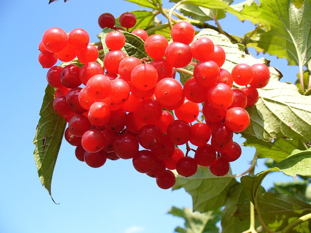
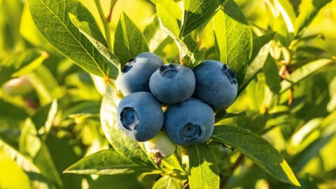
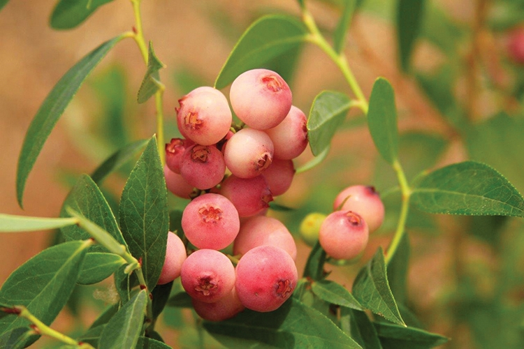

El arándano, conocido científicamente como Vaccinium corymbosum, es una pequeña fruta azul que es muy apreciada por su sabor dulce y ácido, así como por sus múltiples beneficios para la salud. Originario de América del Norte, se ha vuelto popular en todo el mundo, tanto fresco como en jugos y productos procesados.
Video obtenido de: TvAgro
Variedad que destaca por su color vibrante y su sabor agridulce, muy utilizada en mermeladas.
La variedad más común, rica en antioxidantes y conocida por su sabor dulce y jugoso.
Una variedad menos común, con un sabor suave y un color distintivo que lo hace atractivo.
| Aspecto | Descripción |
|---|---|
| Clima | Prefiere climas frescos y húmedos, con inviernos fríos. |
| Suelo | Necesita suelos ácidos, bien drenados y ricos en materia orgánica. |
| Riego | Requiere un riego regular, especialmente en períodos secos. |
| Plagas y Enfermedades | Puede verse afectado por plagas como el escarabajo del arándano y enfermedades fúngicas. |
| Recolección | Los frutos se cosechan a mano cuando alcanzan su máximo color y dulzura. |